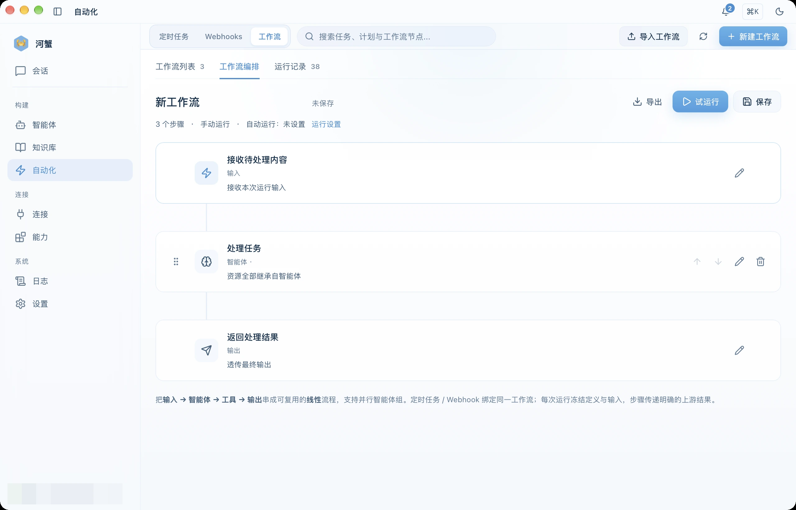

Workflow Canvas
Build multi-step tasks under Automation → Workflows, combine agents and tools, and inspect artifacts and delivery results.
Overview
Workflows live under Automation → Workflows. The editor organizes tasks as linear steps: start with a trigger and input, process it with agents, tools, or parallel agents, then produce the result. Each step can use the run input, the previous result, or a selected step's result.
You can also query, create, and update workflows in chat, then run one when explicitly requested. Chat and the workspace share the same definitions and run records. Saving a definition does not start a run.
Step Anatomy
Configure processing and resources for each step type:
| Field | Description |
|---|---|
| Input | Select the run input, previous result, or a selected step's result, using text, a structured field, or artifacts as needed. |
| Agent and model | Select an agent and provide instructions. Inherit the model settings or choose a model for this step. |
| Tools and parallel processing | A tool step selects an MCP tool and its arguments; a parallel step assigns separate tasks to multiple agents. |
| Resources | Inherit, select, or omit skills, prompts, knowledge, and tools. Memory retrieval and writeback follow the step settings. |
| Output | Prepare final text, structured results, or artifacts, and choose file formats and delivery destinations. |
Create a Workflow
- Open the Automation → Workflows tab and create a new workflow
- Add steps, then add / remove / reorder them as needed
- Select agent, tool, or parallel processing and configure input, instructions, model, and resources
- Set file formats and delivery destinations in the output step
- Save the workflow
- Click Dry Run, provide the run input, and inspect step states and the final result
Dry Run calls the actual models and tools and performs the configured output and delivery actions. The run record preserves the definition and input used for that execution.

Files and Delivery
The output step can generate PDF, Markdown, or HTML files. Return results to the source conversation or workflow conversation, send them to configured DingTalk or email destinations, or save them to a desktop or service-side directory. Accounts, destinations, and directories must be available in the connected environment.
Run details show step execution, file generation, and delivery states separately. Download ready files or use the corresponding action for failed file generation or delivery. Email acceptance does not prove receipt by the recipient; channel results follow actual receipts.
Scheduled and Event Triggers
Run the same workflow manually, schedule it, or bind an existing Webhook. Check the enabled state after saving the trigger. Updating a schedule and starting an immediate run are separate actions.
Execution & Status
Run details and history show actual states for the overall run, individual steps, and parallel tasks:
- ⏳ Waiting — not yet executed
- 🔄 Running — currently executing
- ✅ Completed — executed successfully
- ❌ Failed — execution error
- Cancelled / interrupted — the run did not finish; available continuation actions depend on its recorded state
- Outcome unknown — the external operation's result has not been confirmed; inspect and reconcile the existing records first